INDUSTRIAL COMPLEX · SOLAR · DRONE · DIGITAL TWIN
PICT INDUSTRIAL
산업단지 통합 관제 플랫폼
버전 2026.10 · PICT
목차
시작하기 — 접속, 화면 구성, 지도 조작메뉴별 사용법
대시보드 · 영상자료 · 열화상 분석
태양광 관리 · 3D 트윈 · 시설·입주기업
상호 기입 · 주소·필지 · 도면 중첩
환경 모니터링 · 안전·재난 · 드론 운용 · 보고서 · 설정
업무별 따라하기 — 신규 단지, 실측 데이터 등록, 열화상 점검, 입주기업 지도화데이터 관리 — 저장 위치, 백업, 다른 컴퓨터로 옮기기문제 해결(FAQ) 부록 — CSV 양식, 판정 기준, 지원 형식, 용어
이 매뉴얼의 대상 산업단지 관리자·안전/시설 담당자·드론 촬영 담당자. 서버 설치와 개발자용 내용은 프로젝트의 README-INDUSTRIAL.md를 참고하세요.
1. 시작하기
1.1 실행과 접속
서버 PC에서 start-industrial.bat을 실행합니다(검은 서버 창이 열리고 브라우저가 자동으로 열립니다). 수동으로는 프로젝트 폴더에서 npm start.
브라우저에서 http://localhost:3200/ 로 접속합니다. 같은 네트워크의 다른 PC·태블릿은 http://서버IP:3200/.
서버 창은 사용하는 동안 닫지 마세요. 닫으면 화면이 멈춥니다.
포트는 3200 하나입니다 예전 주소(5174 등)로 열어 둔 탭은 자동으로 3200으로 넘어가지만, 즐겨찾기를 3200으로 바꿔 두세요. 서버를 다시 띄울 때는 기존 서버 창을 먼저 닫아야 포트가 겹치지 않습니다.
1.2 화면 구성
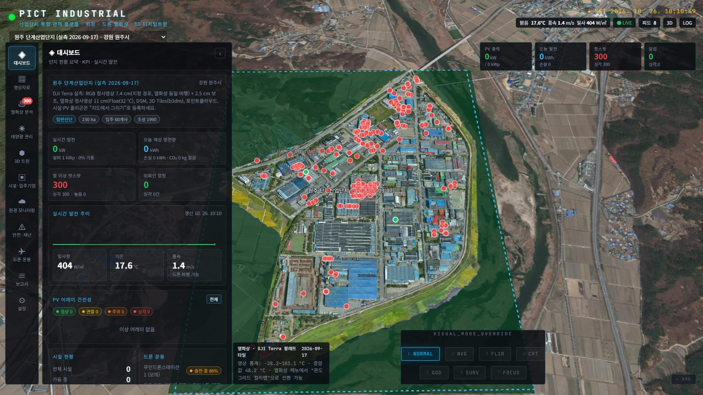
그림 1. 기본 화면(대시보드)
영역 설명 상단 왼쪽 로고와 단지 선택 드롭다운. 단지를 바꾸면 지도·데이터가 해당 단지로 전환됩니다. 상단 오른쪽 현재 기상, 실시간(LIVE) 상태, 피드 (광역 레이어), 3D, LOG 버튼. 그 아래 KPI 카드 4개: PV 출력 · 오늘 발전량 · 핫스팟 · 알림. 왼쪽 메뉴 레일 대시보드, 영상자료, 열화상 분석 등 14개 메뉴. 열화상·안전 메뉴의 빨간 숫자는 미조치 건수. 같은 메뉴를 다시 누르면 패널이 접힙니다. 메뉴 패널 선택한 메뉴의 내용. 오른쪽 위 ‹ 버튼으로 접어 지도를 넓게 볼 수 있습니다. 지도 3D 지구본 위에 정사영상·열화상·3D 모델·필지·도면이 겹쳐 표시됩니다. 객체를 클릭하면 오른쪽에 상세 카드 가 열립니다. 하단 VISUAL MODE NORMAL / NVG / FLIR 등 화면 효과. 평소에는 NORMAL.
1.3 지도 조작
동작 방법 이동 마우스 왼쪽 버튼 드래그 확대/축소 마우스 휠, 또는 오른쪽 버튼 드래그 기울기·회전 휠 버튼 드래그 또는 Ctrl +왼쪽 드래그 특정 위치로 이동 목록의 행·버튼(위치로 이동)을 누르면 지도가 자동으로 이동합니다. 그리기(시설·PV) 왼쪽 클릭으로 점 추가 → 오른쪽 클릭 또는 Enter 로 완료, Esc 로 취소
팁 정밀 작업(필지 클릭, 도면 비교)은 지도를 위에서 내려다보게 (기울기 최소) 하고 약 1 km 이하로 확대하세요.
1.3 등록된 단지
단지 내용 원주 단계산업단지 RGB 정사영상, 열화상(11 cm), 3D 모델 — 실측 (2026-09-17) 동해산업단지 RGB 정사영상, 열화상, 3D 모델 — 실측 (2026-09-16) 춘천 / 강촌 3D Tiles, 정사영상·사진 북평산단 데모 가상 배치 데모(시설·PV·센서 포함). 메뉴 체험용
단지는 설정 메뉴에서 추가·편집합니다.
2. 메뉴별 사용법
2.1 대시보드
단지 현황을 한눈에 봅니다. 단지 요약, 실시간 발전 (5초 갱신)과 오늘 예상 발전량, 열 이상 핫스팟과 미확인 알림 수, 일사량·기온·풍속, PV 어레이 건전성(정상·관찰·주의·심각), 시설 현황, 드론 스테이션 상태, 최근 알림이 표시됩니다.
"전체" 버튼으로 어레이·알림 상세 메뉴로 이동합니다. 알림은 확인 버튼으로 처리합니다. 참고 태양광 발전량은 PV 어레이를 등록해야 표시되며, 실제 인버터 연동 전에는 일사량 기반 모의 값입니다.
2.2 영상자료
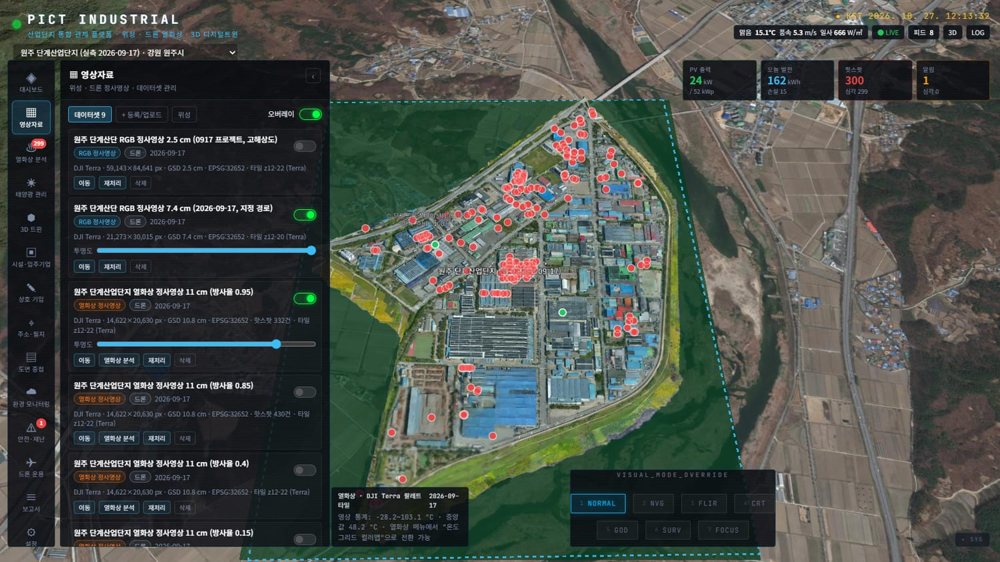
그림 2. 영상자료 — 데이터셋 목록 정사영상·열화상·DSM·3D Tiles·사진 폴더를 등록하고 지도 표시를 관리합니다. 상단 탭은 데이터셋 / + 등록·업로드 / 위성 입니다.
오버레이 on/off · 투명도 : 데이터셋마다 켜고 끄고 투명도를 조절합니다. 여러 개를 겹쳐 비교할 수 있습니다.열화상 분석 버튼: 열화상 데이터셋에서 바로 분석 메뉴로 이동합니다.서버 로컬 경로 등록 : 서버 PC에 있는 GeoTIFF / tileset.json / 사진 폴더의 절대 경로를 입력해 등록(대용량 권장, 파일 복사 없음). DJI Terra의 타일 폴더는 그대로 참조합니다.파일 업로드(브라우저) : 작은 파일을 직접 올립니다.
팁 "유형"은 정확히 고르세요: 정사영상(orthophoto) · 열화상(thermal) · DSM · 3D Tiles · 포인트클라우드 · 사진. 열화상은 온도값(Float32 °C) GeoTIFF가 가장 정확합니다.
2.3 열화상 분석
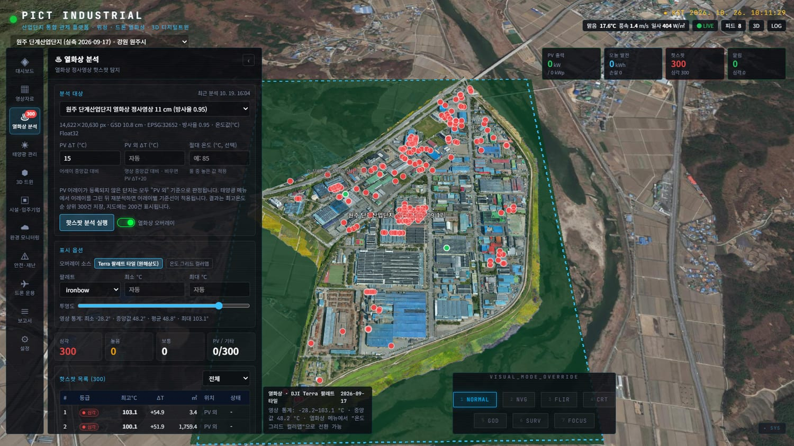
그림 3. 열화상 분석 — 핫스팟 탐지와 목록 열화상 정사영상에서 이상 고온 지점(핫스팟)을 자동 탐지합니다.
분석 대상 에서 열화상 데이터셋을 고릅니다(방사율 0.95가 기본).PV ΔT (기본 15 °C), PV 외 ΔT (비우면 PV ΔT+20), 필요 시 절대 온도 를 정합니다.핫스팟 분석 실행 을 누릅니다(큰 영상은 수십 초 걸립니다).결과 목록의 행을 클릭하면 지도가 해당 위치로 이동합니다. 현장 확인 → 조치 완료 로 처리 상태를 기록합니다.
표시 옵션 에서 오버레이 소스(원해상도 타일 / 온도 그리드 컬러맵), 팔레트(ironbow 등), 최소·최대 °C, 투명도를 바꿉니다.
판정 기준 PV 어레이 안: 어레이 중앙값 대비 ΔT ≥ 15 °C. PV 밖: 영상 중앙값 대비 ΔT ≥ 임계값+20 °C(지붕·도로의 자연 고온 제외). 최고온도 순 상위 300건을 저장하고 지도에는 200건을 표시합니다. 등급은 ΔT ≥ 30 심각 · ≥ 20 높음 · ≥ 10 보통(IEC TS 62446-3 참고).
같은 비행은 결과 하나만 같은 단지·같은 촬영일의 방사율 변형 영상(0.95/0.85/0.4/0.15)은 같은 비행이므로 마지막 분석이 이전 결과를 교체합니다. 방사율이 다른 영상으로 분석해도 핫스팟이 중복 집계되지 않습니다.
PV 어레이를 등록하지 않은 단지는 모든 핫스팟이 "PV 외"로 판정됩니다. 어레이를 그린 뒤 다시 분석하면 어레이별 기준선이 적용됩니다.
2.4 태양광 관리
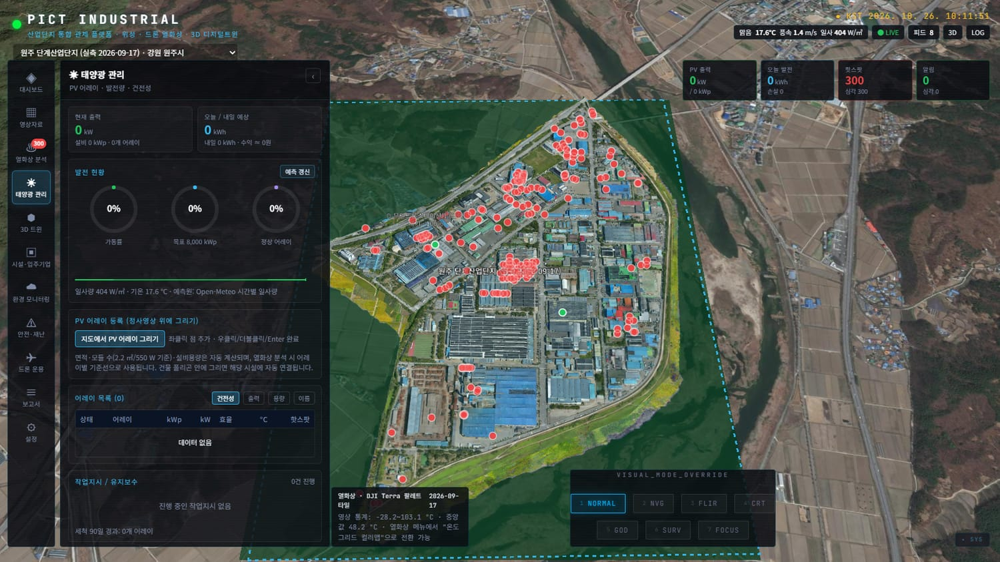
그림 4. 태양광 관리
발전 현황 : 어레이 목록, 실시간 출력·모듈 온도·효율, 오늘/내일 발전량과 손실 추정(일사량 기반).PV 어레이 등록 : "지도에서 그리기"를 켜고 정사영상 위 패널 영역을 따라 클릭 → 우클릭/Enter 완료 → 이름·용량 입력. 면적과 모듈 수는 자동 계산됩니다.어레이를 선택하면 상세(설비용량, 경사/방위, 최근 세척·열화상 점검, 핫스팟 수)가 나오고 세척 작업지시 , 현장 점검 지시 를 발행할 수 있습니다.
작업지시/유지보수 목록에서 진행 상태를 완료 처리합니다.
2.5 3D 트윈
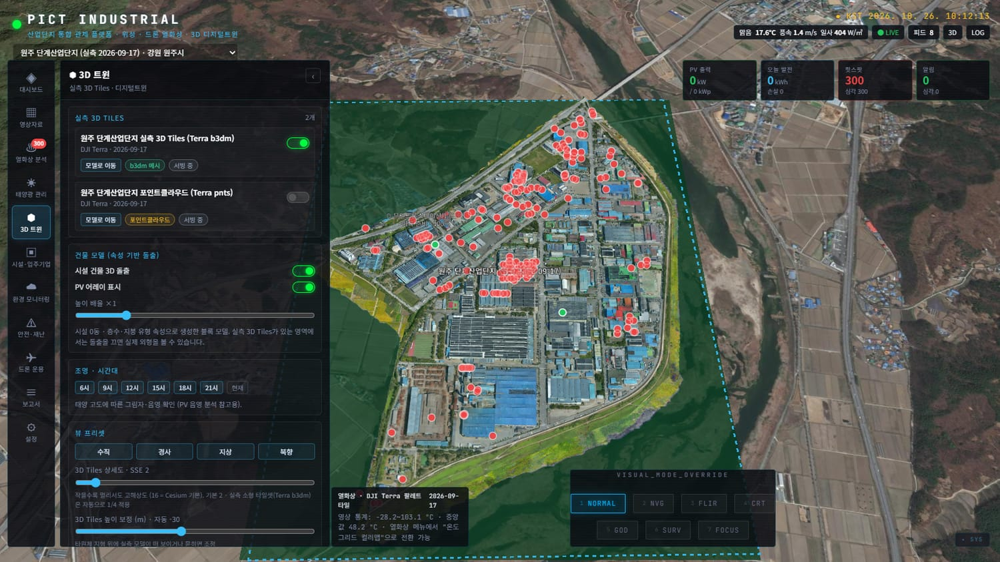
그림 5. 3D 트윈 메뉴와 실측 3D 모델
실측 3D Tiles : 등록된 3D 모델(DJI Terra b3dm, iTwin 등)의 표시 on/off, "위치로 이동".3D Tiles 상세도 슬라이더(기본 2): 값이 작을수록 멀리서도 선명하지만 무겁습니다. 멀리서 거칠게 보이면 낮추고, 느리면 높이세요(춘천 같은 큰 모델은 슬라이더 값 그대로 적용).3D Tiles 높이 보정 : 정사영상과 3D 모델 높이가 어긋날 때 조정(자동 값이 기본).건물 모델 : 등록한 시설을 속성 기반으로 돌출(높이 배율), PV 어레이 표시.조명·시간대 : 시간대별 태양 위치와 그림자. 뷰 프리셋 : 수직 / 경사 / 지상 / 북향. 지형 과장 조절.
2.6 시설·입주기업
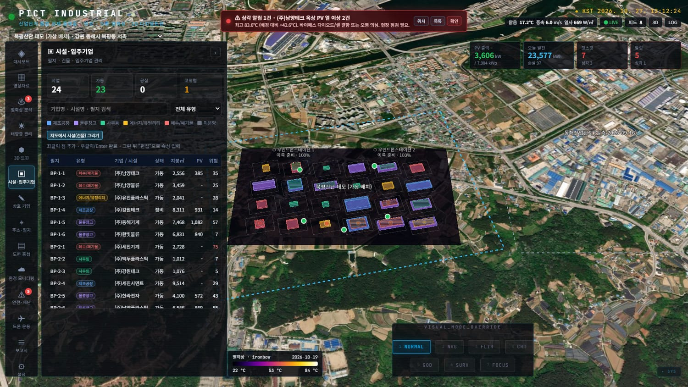
그림 6. 시설·입주기업 (북평 데모 단지)
필지/건물/입주기업 목록, 검색(기업명·시설명·필지), 유형 필터(제조공장·물류창고·사무동·에너지/유틸리티·폐수/폐기물·미분양).
행을 선택하면 상세(지붕 면적, 인원, 월 전력, 층수, 위험도, 태양광 설치 현황)와 편집 ·삭제 ·위치로 이동 .
"지도에서 시설(건물) 그리기"로 건물을 직접 그린 뒤 편집에서 속성을 입력합니다.
입주기업을 한꺼번에 넣으려면 주소·필지 메뉴에서 CSV로 올린 뒤 "시설·입주기업으로 일괄 등록"을 사용하세요.
2.7 상호 기입 (지적도 클릭)
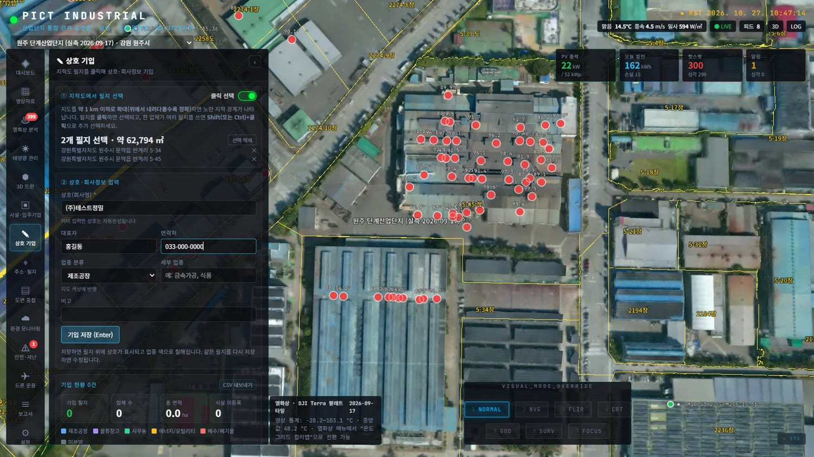
그림 7. 지적도에서 필지를 선택하고 상호를 입력 지적도 필지를 클릭해 상호·회사정보를 기입합니다. 메뉴를 열면 연속지적도가 자동으로 켜집니다.
지도를 약 1 km 이하로 확대 (위에서 내려다보기)하면 노란 지적 경계와 지번이 나타납니다.
기입할 필지를 클릭 합니다(하늘색으로 강조). 한 업체가 여러 필지를 쓰면 Shift 또는 Ctrl +클릭으로 추가 선택합니다.
상호(필수), 대표자, 연락처, 업종 분류, 세부 업종, 비고를 입력하고 Enter 또는 기입 저장 .
저장하면 필지가 업종 색으로 칠해지고 상호가 표시됩니다. 건축물대장 정보(층수·용도)가 자동으로 채워집니다 .
이미 입력한 상호는 자동완성되고, "직전 입력값 불러오기"로 반복 입력을 줄입니다.
같은 필지를 다시 선택해 저장하면 수정, "기입 삭제"로 지웁니다.
업종 분류를 "자동" 으로 두면 건축물대장 주용도(공장·창고·업무 등)로 분류합니다.
기입 현황 : 기입 필지 수·업체 수·총 면적, 검색, 행 클릭 시 이동, CSV 내보내기 (상호·대표자·연락처·주소·PNU·층수·용도·면적 등).
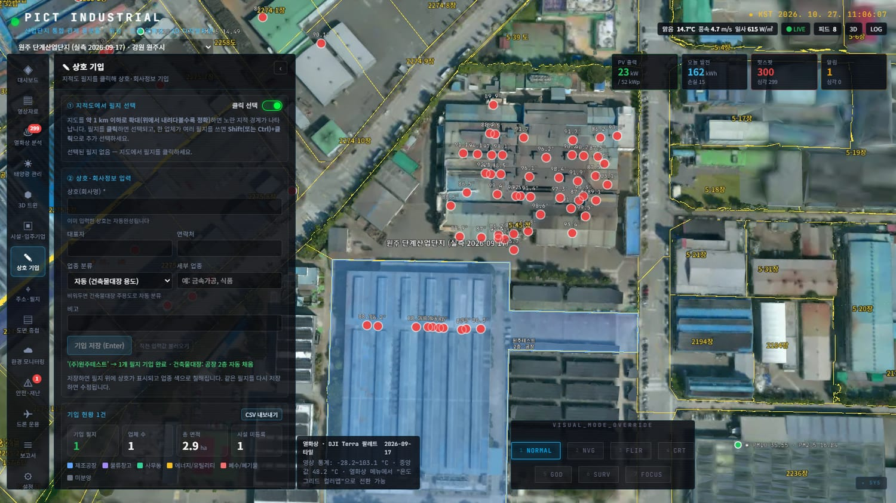
그림 8. 저장 후 — 상호와 "2층 · 공장"이 필지 위에 표시됨 정확도 주의 클릭 위치는 건물 지붕 기준이라 비스듬히 보면 옆 필지가 선택될 수 있습니다. 저장 전에 하늘색으로 강조된 필지가 맞는지 확인하세요. 건축물 정보는 브이월드 건물통합정보(건축물대장 기반)라 최신 변경이 늦게 반영될 수 있으며, 공식 서류용이면 원본 대장과 대조하세요.
2.8 주소·필지 (CSV 일괄 입력)
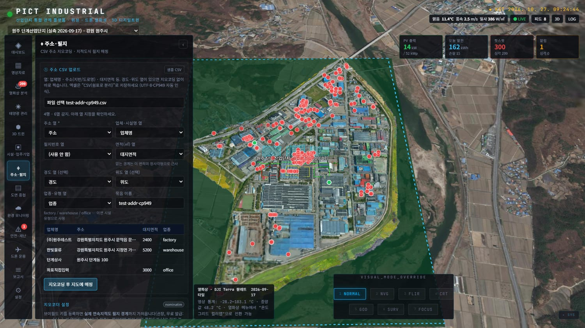
그림 9. CSV 업로드와 열 지정 엑셀 명단(업체명·주소 등)을 올리면 주소를 좌표로 바꿔(지오코딩) 필지로 지도에 찍습니다.
엑셀을 CSV(쉼표로 분리) 로 저장합니다(UTF-8·CP949 자동 인식). 샘플 CSV 버튼으로 양식을 받을 수 있습니다.
주소 CSV 업로드 에서 파일을 선택하면 주소·업체명·면적·업종 열이 자동 지정됩니다. 다르면 드롭다운으로 바로잡습니다. 경도·위도 열이 있으면 그 좌표를 그대로 사용합니다.지오코딩 후 지도에 매핑 을 누릅니다. 진행률이 표시되며 중단 할 수 있습니다.완료 후 건축물대장 조회 가 자동으로 이어져 층수·용도가 채워집니다.
결과 목록에서 실패만 / 정확도 낮음 필터로 문제 건을 모아 주소를 고쳐 재지오코딩하거나, 경도·위도를 직접 입력합니다.
경계가 있는 필지는 시설·입주기업으로 일괄 등록 할 수 있습니다.
경계 종류 의미 지적도 경계(파랑) 브이월드 연속지적도의 실제 필지 경계 + PNU 근사 도형(노랑 점선) 좌표는 찍혔지만 경계는 면적 열(없으면 20 m) 기준 사각형 — 정확도 낮음
지오코더 설정(중요) 같은 메뉴의 지오코더 설정 에 브이월드 API 키 를 등록하면 지번·도로명 주소를 정확히 찾고 실제 필지 경계를 가져옵니다. 키가 없으면 무료 OSM 지오코더로 읍·면·동·리 수준만 찾습니다(느리고 부정확). "주소 한 건 테스트"로 동작을 확인하세요. 키는 서버에만 저장되며 화면과 GitHub에 노출되지 않습니다.
연속지적도 표시
같은 메뉴의 연속지적도(브이월드) 토글을 켜면 전국 지적 경계와 지번이 지도 위에 겹쳐 보입니다(약 1.5 km 이하로 확대 시).
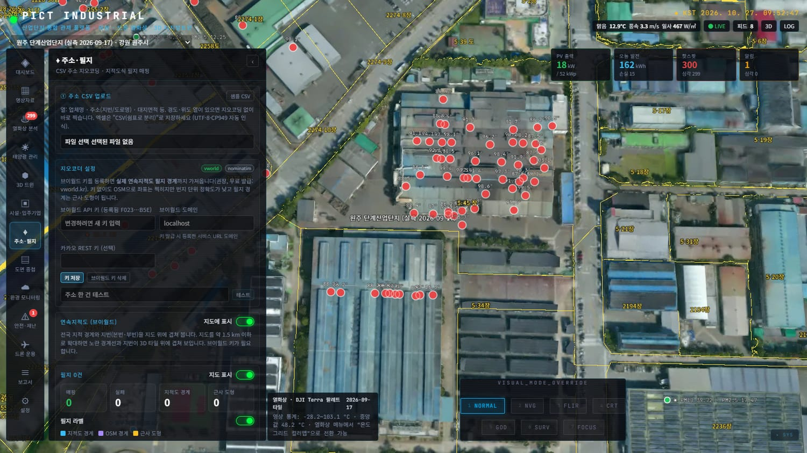
그림 10. 연속지적도 겹쳐보기 (노란 경계선·지번) 2.9 도면 중첩 (SHP / DXF)
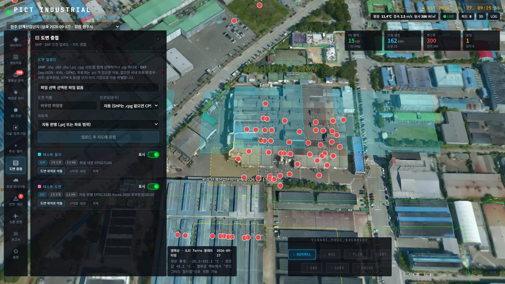
그림 11. SHP(하늘색 면)와 DXF(초록 선)를 3D 모델 위에 중첩
도면 업로드 에서 파일을 선택합니다. SHP는 .shp .dbf .shx(권장 .prj .cpg)를 함께 선택하거나 .zip 하나로 올립니다. DXF·GeoJSON·KML·GPKG도 가능합니다.좌표계는 기본 자동 판별 (.prj가 있으면 그대로, 없으면 국내 좌표계 후보 중 단지 위치에 가장 가까운 것)입니다. 알고 있으면 직접 선택하세요.
업로드 후 지도에 중첩 을 누르면 변환되어 지도에 표시되고 해당 위치로 이동합니다.
스타일·설정 에서: 색상, 선 굵기, 투명도, 지면 밀착(클램프), 면 채우기, 라벨(문자·속성) 표시와 라벨 속성 선택 , DXF 원본 색 사용, 도면 레이어별 켜기/끄기 .
위치가 어긋나거나 글자가 깨질 때 도면 카드의 스타일·설정 → 좌표계/인코딩 선택 → 이 설정으로 다시 변환 . 재업로드가 필요 없습니다. 한글 CAD는 보통 CP949, 좌표계는 중부원점(EPSG:5186/5174 등) 또는 UTM-K(5179)입니다.
여러 도면과 지적도·필지·열화상을 함께 켜서 서로 대조할 수 있습니다.
2.10 환경 모니터링
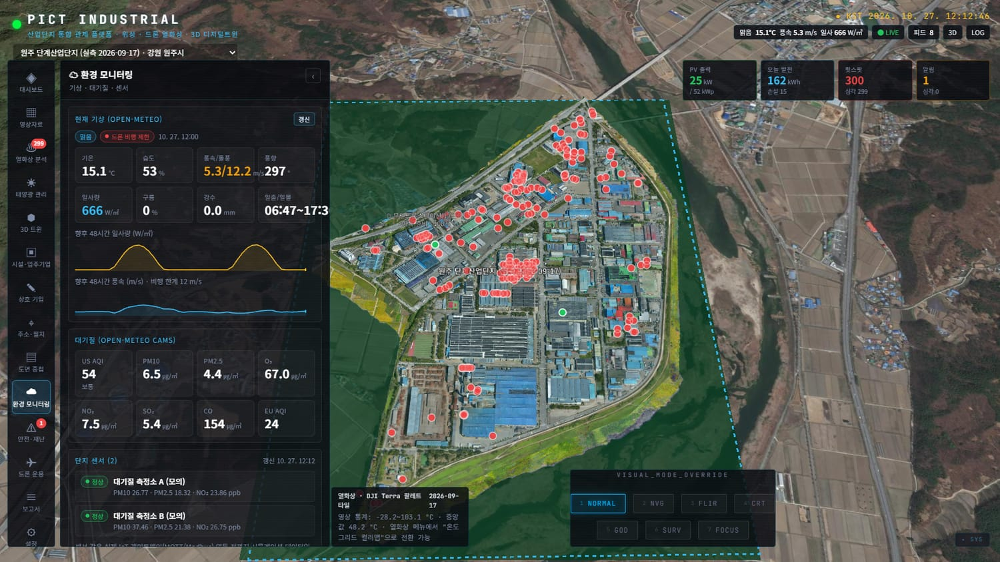
그림 12. 환경 모니터링
현재 기상 (Open-Meteo): 일사·기온·풍속·강수와 드론 비행 가능 여부.대기질 (CAMS): PM10·PM2.5 등.단지 센서 : 등록된 센서의 실시간 측정값(대기·소음·VOC·기상). 센서는 설정 메뉴에서 추가합니다.광역 환경 레이어 : 기상·대기질·기상특보·산불 열점 등을 지구본에 켜기/끄기.
2.11 안전·재난
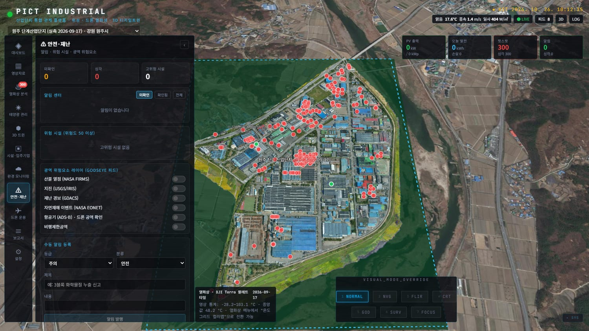
그림 13. 안전·재난
알림 센터 : 열 이상·센서 경보 등. 위치 로 이동, 확인 으로 처리. 심각 알림은 화면 상단에 배너로 뜹니다.위험 시설 : 위험도 50 이상 시설 목록.광역 위험요소 레이어 : 산불 열점(NASA FIRMS), 지진(USGS), 재난경보(GDACS), 자연재해(EONET), 항공기(ADS-B), 비행제한공역.수동 알림 등록 : 등급·분류·제목·내용을 적어 직접 발행.
2.12 드론 운용
그림 14. 드론 운용
비행 조건 : 풍속·강수 기준 비행 가능 여부 표시.스테이션 상태(배터리·풍속·내부 온도)와 임무 예약 (임무명·유형·스테이션·시작 시각·고도·반복), 완료/취소, 긴급 이륙 .촬영 원본 : 사진 폴더를 등록하면 EXIF의 GPS로 위치를 읽어 썸네일과 함께 지도에 표시(열화상/가시광 구분).
2.13 보고서
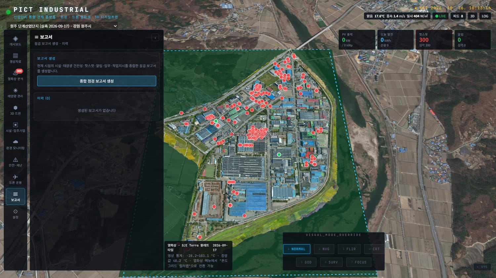
그림 15. 보고서
보고서 생성 을 누르면 현재 단지의 종합 점검 보고서(KPI, 핫스팟, 어레이 건전성, 권고 조치)가 만들어집니다.인쇄/PDF 로 출력하거나 JSON 으로 내려받습니다. 브라우저 인쇄 창에서 "PDF로 저장"을 선택하면 PDF가 됩니다.과거 보고서는 이력 에서 다시 엽니다.
2.14 설정
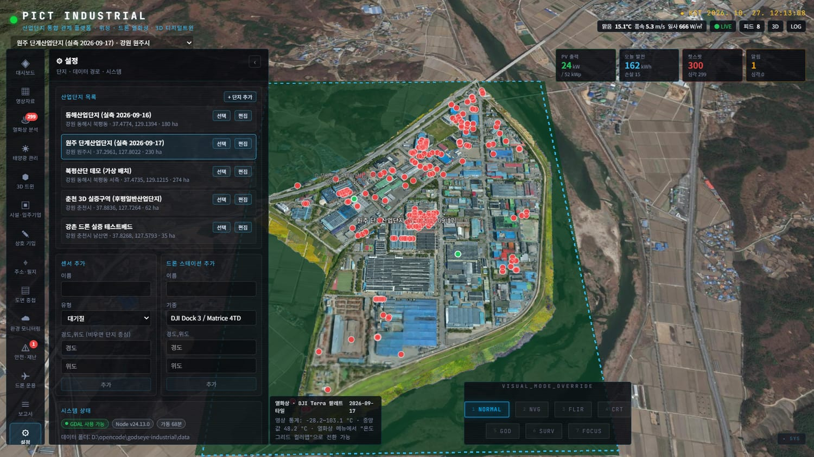
그림 16. 설정
산업단지 목록 : 선택·편집·추가. 단지명, 코드, 지역, 경도·위도 , 유형, 면적(ha), 입주기업 수, PV 목표(kWp), 카메라 높이(m), 설명을 입력합니다.센서 추가 , 드론 스테이션 추가 : 이름·종류·위치(비우면 단지 중심).시스템 상태 : GDAL(QGIS) 연결, 처리 작업 상태. 데모 데이터 재생성 버튼은 모든 데이터를 초기화 하므로 사용하지 마세요.
주의 "데모 데이터 재생성"은 등록한 단지·필지·분석 결과를 지우고 초기 데모로 되돌립니다. 필요하면 먼저 data/db.json을 백업하세요.
3. 업무별 따라하기
3.1 새 단지를 추가하고 실측 데이터를 올리기
설정 → 단지 추가 : 단지명, 코드, 지역, 경도·위도, 면적 등을 입력 → 저장.영상자료 → + 등록/업로드 : 드론 결과물을 서버 경로로 등록합니다.
RGB 정사영상: 유형 "정사영상", 경로 …\map\result.tif (DJI Terra의 타일 폴더 map\{z}\{x}\{y}.png가 같이 있으면 즉시 표시)
열화상: 유형 "열화상", …\map\infrared_map\result_Infrared_*.tif
3D 모델: 유형 "3D Tiles", …\terra_b3dms\tileset.json 등록 후 처리(메타 추출·타일 생성)가 끝나면 지도에 표시됩니다. 오버레이 스위치로 켜고 투명도를 맞춥니다.
3D 모델이 지면과 어긋나면 3D 트윈 → 3D Tiles 높이 보정 을 조정합니다.
3.2 열화상 점검 → 현장 확인 → 보고서
열화상 분석 에서 대상 영상을 고르고 핫스팟 분석 실행 .핫스팟 목록(등급 순)에서 심각 건부터 위치로 이동해 영상을 확인.
현장 점검 후 현장 확인 , 보수 후 조치 완료 로 상태 변경(태양광 어레이면 작업지시 발행).
보고서 → 보고서 생성 → 인쇄/PDF 로 결과 제출.
3.3 입주기업 명단으로 지적도 위에 한꺼번에 표시하기
(처음 한 번) 주소·필지 → 지오코더 설정 에 브이월드 키 입력, "주소 한 건 테스트"로 확인.
엑셀 명단을 CSV로 저장(업체명, 주소 필수 · 대지면적, 업종 선택). 지번 주소가 도로명보다 필지 매칭이 정확합니다.
주소·필지 에서 업로드 → 열 확인 → 지오코딩 후 지도에 매핑 .실패·정확도 낮음 건을 필터로 모아 보정(주소 수정 또는 좌표 직접 입력). 또는 상호 기입 메뉴에서 지적도를 클릭해 직접 지정.
필요하면 시설·입주기업으로 일괄 등록 → 시설·입주기업 메뉴에서 속성(위험도, 인원 등) 편집.
상호 기입 → 기입 현황 → CSV 내보내기 로 결과 파일을 받습니다.
3.4 기존 CAD 도면을 지적도·정사영상과 겹쳐 확인하기
도면 중첩 에서 SHP(zip) 또는 DXF를 업로드(좌표계는 자동).도면이 정사영상과 어긋나면 다시 변환 에서 좌표계를 바꿔 맞춥니다.
주소·필지 → 연속지적도 를 켜서 도면과 지적 경계를 비교합니다.도면 레이어(건물·도로·문자 등)를 필요한 것만 켭니다.
4. 데이터 관리
4.1 데이터가 저장되는 곳
항목 위치(프로젝트 폴더 기준) 단지·시설·핫스팟·필지·알림 등 모든 업무 데이터 data\db.json업로드 파일 · 도면(SHP/DXF 원본과 변환본) data\uploads\, data\drawings\생성된 타일·미리보기·분석 캐시 data\tiles\, data\previews\, data\analysis\지오코더 키·캐시 data\geocode-settings.json, data\geocode-cache.json실측 원본(DJI Terra 등) 원래 폴더를 그대로 참조(복사하지 않음)
백업 정기적으로 data\db.json(필요 시 data\drawings\ 포함)을 복사해 두세요. 서버를 끈 상태에서 복사하는 것이 가장 안전합니다.
4.2 다른 컴퓨터로 옮겨 쓰기
3D·열화상 실측 데이터는 별도 폴더(PICT_INDUSTRIAL_DATA)에 모아 둘 수 있고, 폴더 안 README.txt의 순서를 따릅니다.
새 PC에 Node.js 20+ 설치, 프로젝트를 GitHub에서 받습니다: git clone https://github.com/bigsam73/kermit.git (비공개 저장소라 로그인 필요).
npm install → npm run build.데이터 폴더에서: node import-portable-data.mjs --project C:\경로\kermit — 데이터셋 경로가 새 PC 기준으로 연결됩니다.
npm start → http://localhost:3200/ .
브이월드 키는 보안상 폴더·GitHub에 포함되지 않으므로 새 PC에서 다시 입력 합니다.
열화상 재분석·SHP/DXF 변환·새 정사영상 등록에는 QGIS(GDAL) 가 필요합니다. 보기만 하면 불필요.
폴더 위치를 옮기면 import 스크립트를 다시 실행하세요.
5. 문제 해결 (FAQ)
증상 확인·해결 데이터(원주 등)가 보이지 않는다 주소가 http://localhost:3200/ 인지 확인 → Ctrl +Shift +R . 열화상 메뉴에 "서버에서 받지 못했습니다"가 뜨면 3200 포트로 이동 버튼을 누르세요. 그래도 안 되면 서버 창을 닫고 start-industrial.bat 재실행. 서버 재시작 후 이상한 응답이 번갈아 나온다 예전 서버가 3200 포트를 계속 잡고 있을 수 있습니다. 서버 창(node)을 모두 닫고 한 번만 실행하세요. 3D 모델이 멀리서 뭉개져 보인다 3D 트윈 → 3D Tiles 상세도 를 낮추세요(기본 2). 너무 느리면 높이세요.핫스팟이 두 배로 나온다 예전 버전의 중복 집계입니다. 현재는 같은 비행의 결과를 하나로 교체합니다. 열화상 메뉴에서 다시 분석하면 정리됩니다. 지오코딩이 엉뚱하거나 부정확하다 브이월드 키 등록 여부 확인. 없으면 OSM(동·리 수준). 존재하지 않는 번지는 읍·면·동 중심으로 찍히고 "정확도 낮음"으로 표시됩니다. 지적도(노란 선)가 안 보인다 지도를 1.5 km 이하 로 확대, 토글 ON, 브이월드 키 등록 확인. 인터넷 연결이 필요합니다. 필지 클릭 시 "필지를 찾지 못했습니다" 지적도가 로드되는 높이(1 km 이하)인지, 노란 경계가 보이는지 확인. 위에서 내려다보는 각도에서 다시 클릭. 도면이 엉뚱한 곳에 나온다 도면 카드의 다시 변환 에서 좌표계를 변경(중부원점 5186/5174, UTM-K 5179 등). 도면 글자가 깨진다 인코딩을 CP949(한글 윈도우) 또는 UTF-8로 바꿔 다시 변환. SHP 업로드 시 .dbf/.shx 오류 SHP는 구성 파일을 모두 함께 선택하거나 zip으로 묶어 올리세요. CSV 글자가 깨진다 엑셀에서 "CSV UTF-8" 또는 "CSV(쉼표로 분리)"로 저장하세요(둘 다 자동 인식). 열화상 분석이 너무 느리다/실패 QGIS(GDAL) 설치 여부 확인(설정 → 시스템 상태). 큰 TIFF 축소에 GDAL을 사용합니다.
6. 부록
A. CSV 양식 (주소 일괄 입력)
열 이름(예) 필수 설명 업체명 권장 상호. 지도 라벨과 시설명에 사용 주소 필수* 지번 또는 도로명 주소 (*경도·위도가 있으면 생략 가능) 대지면적 선택 ㎡. 경계가 없을 때 근사 도형 크기에 사용 업종 선택 factory / warehouse / office / utility / treatment / vacant 이면 시설 유형으로 사용 경도, 위도 선택 있으면 지오코딩 없이 사용 (WGS84)
업체명,주소,대지면적,업종
(주)샘플정밀,강원특별자치도 원주시 문막읍 문막리 1234-5,2400,factory
한빛물류,강원특별자치도 원주시 지정면 가곡리 567,5200,warehouse
B. 지원 파일 형식
종류 형식 정사영상·열화상·DSM GeoTIFF (열화상은 온도 Float32 °C 권장), DJI Terra 타일 폴더 3D 3D Tiles: b3dm(DJI Terra), iTwin/RealityScan tileset, 포인트클라우드(pnts) 도면 SHP(.shp+.dbf+.shx+.prj+.cpg 또는 .zip), DXF, GeoJSON, KML, GPKG 사진 JPG/TIF (EXIF GPS), 폴더 단위 등록 목록 CSV (UTF-8, CP949)
C. 자동 판별하는 국내 좌표계
Korea 2000 중부/서부/동부/동해원점(EPSG:5186·5185·5187·5188, 5181·5180·5182), UTM-K(5179), 구 Bessel 지적 좌표계 중부/서부/동부(5174·5173·5175), WGS84 UTM 51N/52N, WGS84 경위도(4326).
D. 용어
용어 설명 핫스팟 주변보다 비정상적으로 뜨거운 지점. 태양광 셀·바이패스 다이오드 결함, 전기 설비 과열 등을 의심 ΔT 기준 온도 대비 상승 온도(°C) 정사영상(Ortho) 드론 사진을 지도 좌표에 맞춰 이어 붙인 위에서 본 영상 DSM 건물·수목을 포함한 지표 높이 모델 3D Tiles 대용량 3D 모델 스트리밍 형식(b3dm 등) PNU 필지고유번호(19자리). 지적도 필지를 식별 지오코딩 주소 문자열을 지도 좌표로 바꾸는 작업 방사율 열화상 온도 계산에 쓰는 표면 특성 값(0.95 기본). 같은 비행의 변형 영상 kWp 태양광 설비 용량 단위
문의·유지보수 PICT · psy@pict.kr · 기능 상세와 API는 프로젝트 폴더의 README-INDUSTRIAL.md.